Для обозначения проходов под мостами, их закрытия или открытия, а также для перекрытия отдельных участков водного пути используются различные сигналы: щиты, огни и флаги.
Красный всегда означает: проход запрещён. Зелёный означает: проход разрешён.
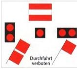
Проход запрещен
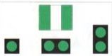
Проход свободен
Повернутые на вершину жёлтые или зелёные квадраты являются рекомендациями; красно‑белые — обязательные знаки. Два жёлтых квадрата могут также располагаться один над другим.

Рекомендованный проход со встречным движением
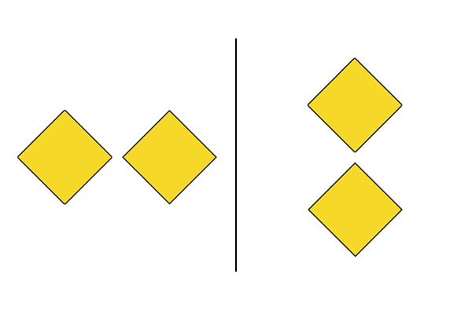
Рекомендованный проход без встречного движения
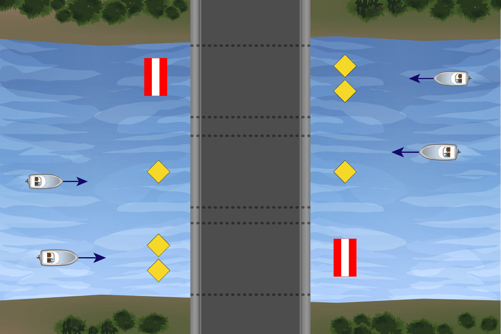
Использование сигналов на мостах
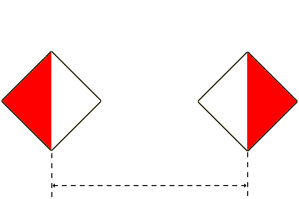
Проход разрешен только между этими щитами
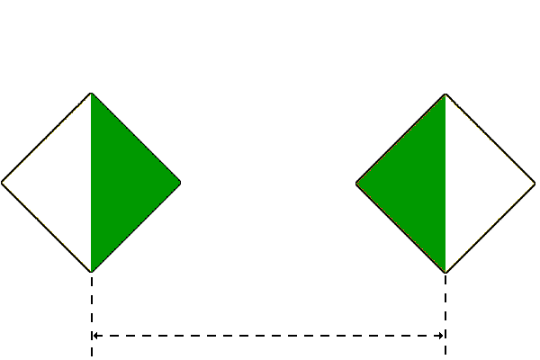
Проход рекомендован только между этими щитами
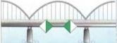
Проход только между зелёными огнями
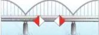
Проход вне белых разметок запрещён
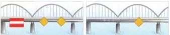
Проход запрещён — рекомендованный проход без встречного движения — рекомендованный проход — встречное движение

Плотина обычно обозначается синим щитом. Проходить её можно только если она обозначена зелёным знаком свободного прохода или жёлтым квадратом рекомендованного проходного пролёта.
К закрытым защитным воротам и паводковым барьерам можно приближаться не ближе чем на 100 м.
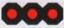
Красный: проход закрыт, мост не может быть пройден
Проход запрещён. Мост закрыт или встречное движение
Мост закрыт. Проход возможен, если высота пролёта достаточна
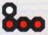
Мост временно не может быть открыт. Проход возможен, если высота пролёта достаточна
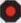
Проход запрещён. Мост в движении
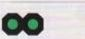
Проход свободен, мост открыт